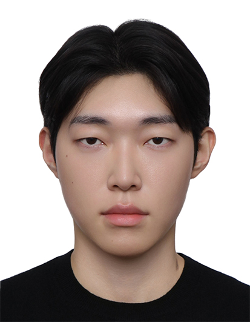
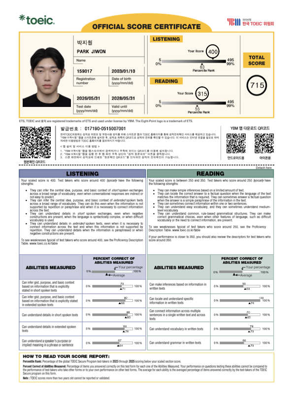
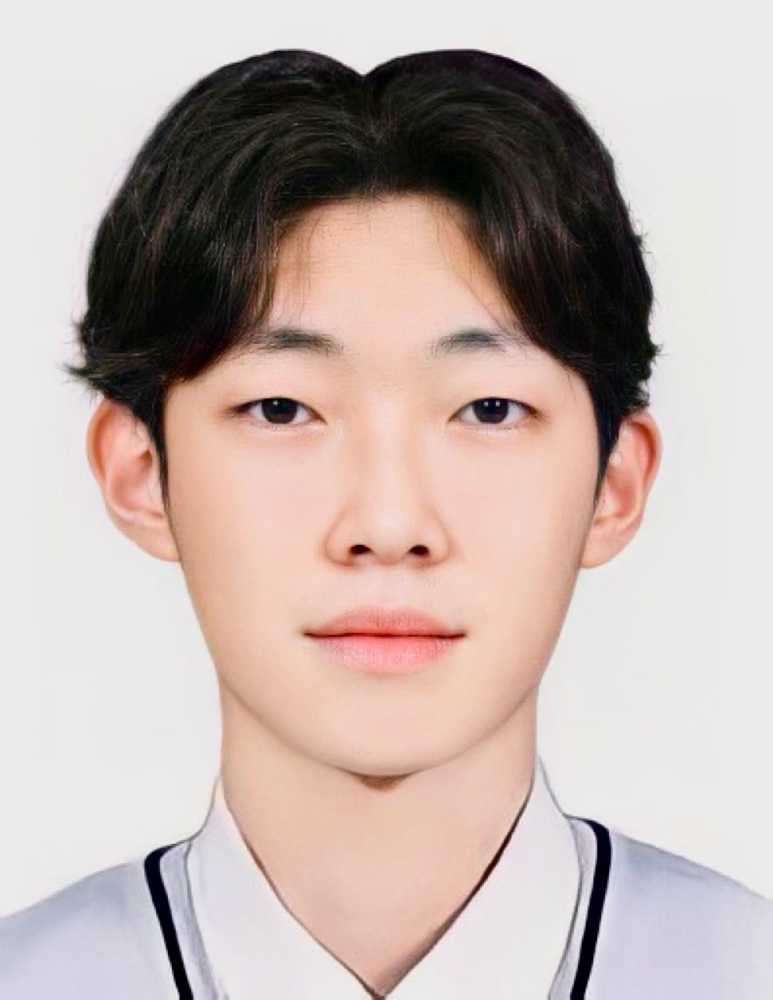
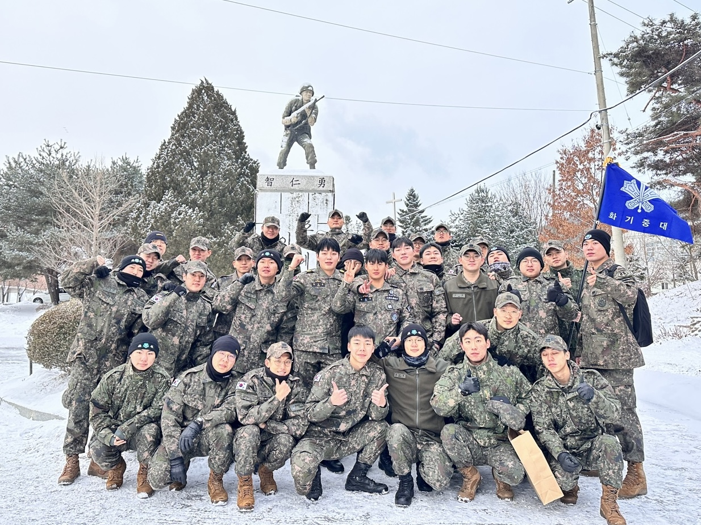
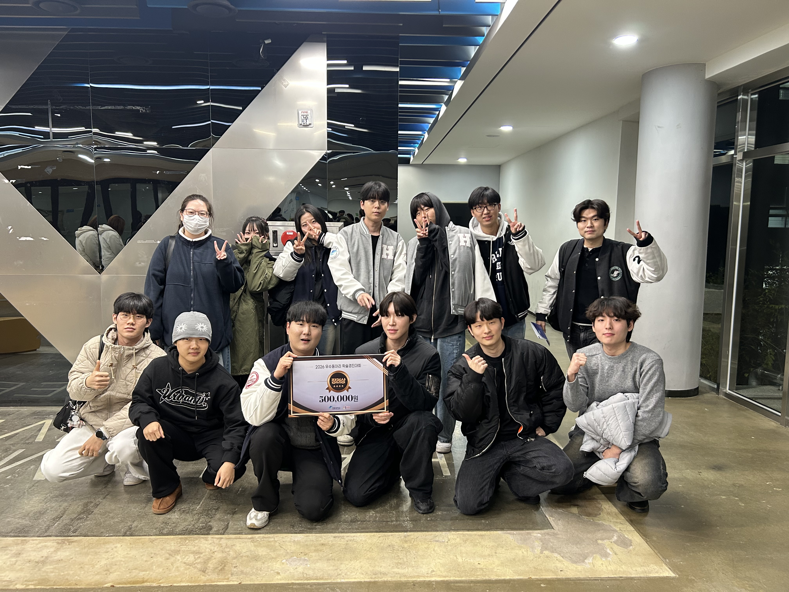
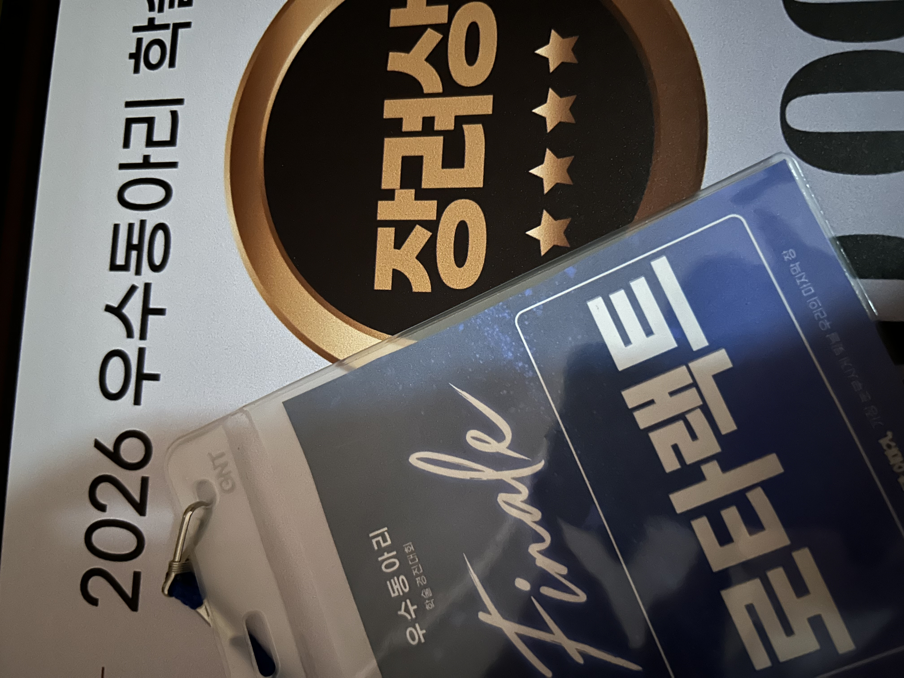

박지원
배움과 도전으로 시야를 넓히며,
새로운 가치를 탐구하는 박지원입니다.
공인 어학 성적
ETS 주관 YBM 한국TOEIC위원회 정기시험 성적표 원본을 검증하고 아카이빙했습니다.
TOEIC (토익 정기시험)
- 성명 박지원 (PARK JIWON)
- 시험일자 2026년 05월 31일
- 유효기간 2028년 05월 31일까지
- 발급번호 017190-0515007001
- 주관/발급 ETS & YBM 한국TOEIC위원회

주요 연혁 및 활동
고등학교 졸업부터 대학 입학, 성실한 군 복무, 그리고 로타랙트 리더십과 학술경진대회 수상까지의 발자취를 공식 기록과 미디어로 연결했습니다.
판곡고등학교 졸업
판곡고등학교 정규 교육과정을 성실히 수료하고 졸업하였으며, 한림대학교 경영학과로 진학하였습니다.

한림대학교 경영학과 입학
한림대학교 경영학과에 입학하여 경영학 원론, 마케팅, 인사관리, 재무 등 기업 경영의 기초를 수학하고 다양한 교내외 프로젝트에 참여하기 시작했습니다.
육군 제25보병사단 신병교육대 병장 만기 전역
육군 제25보병사단 신병교육대 화기중대에서 국방의 의무를 성실히 수행하고 동료 전우들과 함께 전역의 순간을 맞이하였습니다. 단체 생활과 책임감, 협업의 가치를 깊이 체득한 소중한 경험이었습니다.

한림대학교 중앙동아리 봉사분과 로타랙트 42기 부회장
국제봉사단체 로타리클럽의 청년 파트너인 한림대학교 중앙동아리 '로타랙트(Rotaract)' 42기 부회장으로 선출되어 동아리 운영 전반과 지역사회 연계 봉사 프로젝트 기획, 부원 간의 소통을 주도했습니다.
TOEIC 정기시험 715점 달성
학업과 동아리 활동을 병행하며 꾸준한 어학 학습을 통해 Listening 400점, Reading 315점, 총점 715점을 취득했습니다. 비즈니스 환경에서의 글로벌 커뮤니케이션 역량을 다지는 밑거름이 되었습니다.
2026 우수동아리 학술경진대회 장려상 수상
한림대학교가 주최한 2026 우수동아리 학술경진대회에서 로타랙트 42기 부원들과 함께 1년간의 봉사 성과 및 학술적 기여도를 발표하여 장려상(상금 500,000원)을 수상하였습니다.


패션 관심사
평소 구조적인 패턴과 기능성 패브릭, 독창적인 디자인 언어를 전개하는 브랜드를 주목하며 미적 감각과 트렌드를 지속적으로 탐색하고 있습니다.
XLIM
테크니컬한 절개 라인과 상이한 소재의 유기적인 결합, 독창적인 다잉 기법을 통해 서울의 도시적 감성과 현대적 스트리트웨어를 제안하는 브랜드입니다.
POST ARCHIVE FACTION
패턴의 해체와 재구성을 축으로 구조주의적 테일러링을 선보이며, 실험적인 남성복 디자인으로 글로벌 패션계에서 큰 주목을 받고 있는 한국 디자이너 브랜드입니다.
Stone Island
끊임없는 원단 연구와 가먼트 다잉(Garment Dyeing), 혁신적인 텍스타일 가공 기술을 바탕으로 스포츠웨어의 기능성과 감각적인 미학을 융합한 프리미엄 브랜드입니다.